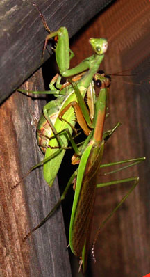
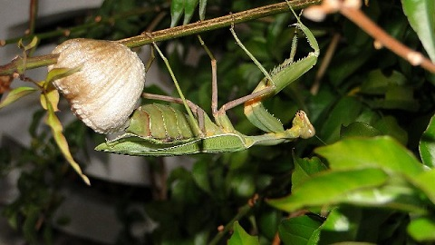
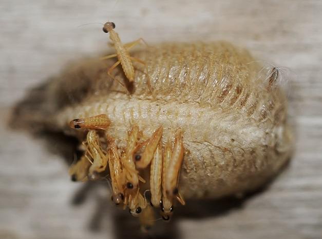
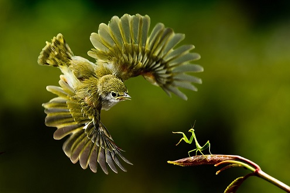
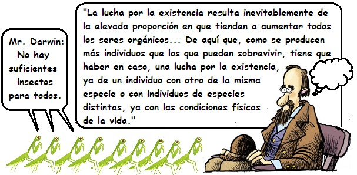
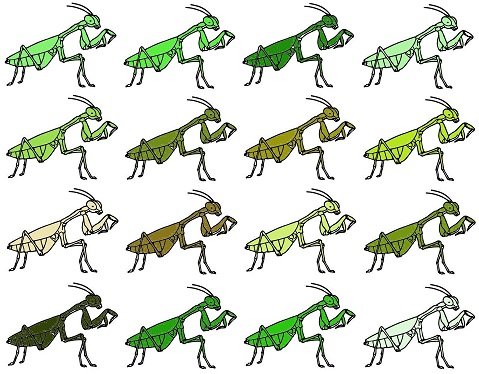

La asombrosa selección natural - Unidad 1
¿Por qué no estamos inundados de mantis?
Las mantis son insectos extraordinarios. Las mantis son insectos depredadores de los que se conocen más de 2.400 especies. Ellas cazan otros insectos e incluso vertebrados pequeños como lagartijas. Estos insectos tienen el primer par de patas adaptados para atrapar sus presas con unas largas púas que se clavan en las infortunadas víctimas de este predador artrópodo. Entre los sexos las mantis suelen diferir en tamaño. Las hembras suelen ser más grandes que los machos. En algunas especies, como la mantis orquídea, la hembra dobla al macho en tamaño. Es conocido que las tras el apareamiento las hembras suelen atacar al macho, y en muchos casos lo capturan después de que este ha fertilizado los huevos de la hembra.
La hembra deposita los huevos en una estructura cerosa o cartilaginosa que se denomina ooteca. Allí los huevos están pegados uno al otro. La ooteca es fijada en una rama, una roca u otro objeto.
Cada ooteca de una mantis puede albergar entre 200 o 300 huevos. Supongamos que todos los descendientes de una ooteca llegasen a la edad adulta y se reprodujeran. Tendríamos entre 100 y 150 parejas que procrearían entre 20 mil y 45 mil individuos. De sobrevivir toda la segunda generación y se reprodujesen, la tercera generación estaría entre 2‘000.000 y 6´750.000 individuos. Entonces, ¿por qué no estamos rodeados de mantis por todos lados?
Lo primero que una persona notaría es que las pequeñas ninfas de mantis son indefensas. Siendo tan pequeñas pueden ser presa de otros animales, incluso de otras mantis. Los adultos tampoco están del todo a salvo. Los pájaros insectívoros están buscando alimento cada día, y muchas de ellas terminan en el menú de las aves.
También las mantis son víctimas de bacterias, virus y hongos que les causan enfermedades y los llevan a la muerte en muchos casos. Dentro de estos últimos se pueden mencionar a los hongos entomopatógenos. Estos últimos crecen dentro del cuerpo de los insectos hasta que los matan.

Los machos de las mantis son muy territoriales, razón por lo que el espacio también es una limitante para el crecimiento sin control de la población de mantis. En algunas ocasiones, temporadas sin lluvias más largas que lo habitual afectan el número de sus presas y eso también es una limitante. En realidad la vida en la naturaleza es muy dura para los organismos. El naturalista inglés Charles Darwin llamó a estos duros avatares de la vida silvestre “la lucha por la existencia”.
“La lucha por la existencia —decía Darwin— resulta inevitablemente de la elevada proporción en que tienden a aumentar todos los seres orgánicos… De aquí que, como se producen más individuos de los que pueden sobrevivir, tiene que haber en caso una lucha por la existencia, ya de un individuos contra otro de la misma especie o con individuos de especies distintas, ya con las condiciones físicas de la vida”.

Otro naturalista que notó que en un ambiente natural los recursos no crecen de la misma manera que el potencial biótico de los organismos fue el británico Alfred Russell Wallace. Este naturalista llegó a esta reflexión mientras se encontraba en el archipiélago de la Molucas, en indonesia. Sin lugar a dudas Wallace debió haber visto muchas mantis en su travesía.
Dejaremos de lado la lucha por la existencia para retomarla más adelante. Por ahora analizaremos otro hecho interesante en la reproducción de las mantis y de todos los organismos con reproducción sexual: La descendencia no es similar entre sí. En los humanos, los perros y gatos, también se puede observar esto. Los hermanos no son iguales entre sí, excepto si son gemelos. Existe variabilidad entre los individuos de una población y esta variabilidad es heredable.
Tomemos por ejemplo el color de un insecto. No todos los individuos de una especie son exactamente iguales en esta característica. Hay ligeras diferencias, que hoy sabemos se deben a los genes. Existen diferentes alelos, y estos pasan de padres a hijos.
La diversidad genética en los organismos está fundamentada en dos procesos: la reproducción sexual y la mutación. La mutación es el cambio aleatorio de las secuencias de nucleótidos del ADN, lo cual permite la aparición de nuevos alelos. La reproducción sexual es aquella en la que se requiere la unión de dos células sexuales o gametos. La reproducción sexual es una fuente de variación genética al ocurrir la combinación de genes durante la formación de gametos (en la meiosis).
Cuando se están formando los gametos (óvulos y espermatozoides) los cromosomas intercambian fragmentos. Este proceso hace que los gametos sean genéticamente diferentes entre sí. Como esto ocurre tanto en la formación de los óvulos y de los espermatozoides (en el caso de los animales), la descendencia podrá heredar genes de sus cuatro abuelos. Si no ocurriera el entrecruzamiento la diversidad genética sería menor. La fecundación también añade diversidad genética al poner en contacto genes de diferentes padres.

Posteriormente en la fecundación, se mezclan al azar los cromosomas provenientes del gameto masculino con los del gameto femenino.
Teniendo claro que las plantas y animales en sus poblaciones no son clones, sino difieren unos de otros, retomemos el tema de la lucha por la existencia.
Alfred Russell Wallace y Charles Darwin notaron que la diversidad existente dentro de las poblaciones permite que las poblaciones cambien con el paso de generaciones. En medio de la diversidad habrá un organismo que en virtud a sus características fenotípicas tenga una ligera ventaja en la lucha por la existencia. Ese organismo llegará hasta la edad adulta y dejará descendencia. Con sus gametos viajarán sus alelos a la siguiente generación. De esta manera es probable que los hijos del organismo afortunado hereden también la característica que permitió a su progenitor sobrevivir.
Mr. Wallace reflexionando sobre esto escribió:
“La mayoría o quizá todas las variaciones de la forma típica de una especie deben tener algún resultado definitivo, aunque despreciable, en los hábitos o capacidades de los individuos. Incluso un cambio de color podría, haciéndolos más o menos distinguibles, afectar su seguridad; un mayor o menor desarrollo de pelo podría modificar sus hábitos. Cambios más importantes, como el incremento en la potencia o dimensiones de las extremidades o cualquier órgano externo, debería afectar más o menos a sus modos de obtener alimento o la extensión del territorio en el cual habitan. También es evidente que la mayoría de los cambios deberían afectar, ya sea favorablemente o negativamente, las capacidades para prolongar la existencia.
Un antílope con patas cortas o débiles está necesariamente más expuesto a los ataques de los felinos carnívoros; la paloma mensajera con una potencia inferior en las alas debería verse afectada más pronto o más tarde en su capacidad para obtener alimento y en ambos casos el resultado debe ser necesariamente una disminución de la población de la especie modificada. Si, por el contrario, alguna especie produjese una variedad con un ligero incremento de sus capacidades para preservar su existencia, esta variedad debería adquirir inevitablemente una superioridad numérica con el paso del tiempo”.
De esta manera Wallace y Darwin realizaron cinco observaciones de manera independiente que condujeron a dos conclusiones.
Las primeras observaciones indican que (1) los recursos de un ecosistema son limitados, (2) los organismos tienen un gran potencial reproductor; (3) las poblaciones de plantas y animales usualmente se mantienen constantes. Primera conclusión: Existe una fuerte lucha por la existencia.
Las otras dos observaciones fueron que (4) en las poblaciones existe diversidad, variabilidad. Y (5) esta variabilidad es heredable. Segunda conclusión: En una población no todos los organismos se reproducen de la misma manera. Unos dejan más descendencia que otros.
Darwin y Wallace llegaron a resolver el misterio de porque no estamos inundados de mantis, pero más importante aún, encontraron el mecanismo que permite la evolución de la vida sobre este planeta. Esto lo veremos en el siguiente modulo.
Bibliografía:
Campbell, N (1990). Biology. Second edition, Benjamin/Cummings.
Curtis, H., Barnes, S. (1989). Biology, Fifth edition, Worth Publishers.
Hickman, C., Roberts, L, y Parson A. (1998). Principios integrales de zoología. Décima edición. Buenos Aires. McGraw-Hill-Interamericana.
Sadava, D. et al (2009). Vida. La ciencia de Biología. Buenos Aires, Argentina, Editorial Médica Panamericana.
Wallace A.R.(1858). Sobre la tendencia de las variedades para alejarse indefinidamente del tipo original.
Información de la mantis religiosa: http://insected.arizona.edu/espanol/mantidinfo.htm
La extraña reproducción de las mantis religiosas: http://biojcosta.blogia.com/2009/122211-la-extrana-reproduccion-de-las-mantis-religiosas.php
Créditos de fotografías:
Foto 1: http://tsjok45.wordpress.com/2012/11/21/de-wrede-natuur/
Foto 2: Juanjo Trujillo - http://floramalaga.blogspot.com/2010/11/fauna-de-mi-jardin.html
Foto 3: Pana - Francisco Dillet - http://dillet.blogspot.com/2012/06/nacimiento-de-una-mantis-religiosa.html
Foto 4. http://onlypositive.net/post/Bird-trying-to-catch-a-praying-mantis.aspx
Imagen 9 - Traducida y modificada de: http://apps.cmsfq.edu.ec/biologyexploringlife/text/chapter9/09images/09-19.gif
{kind=link}
Comentarios
Comments powered by Disqus